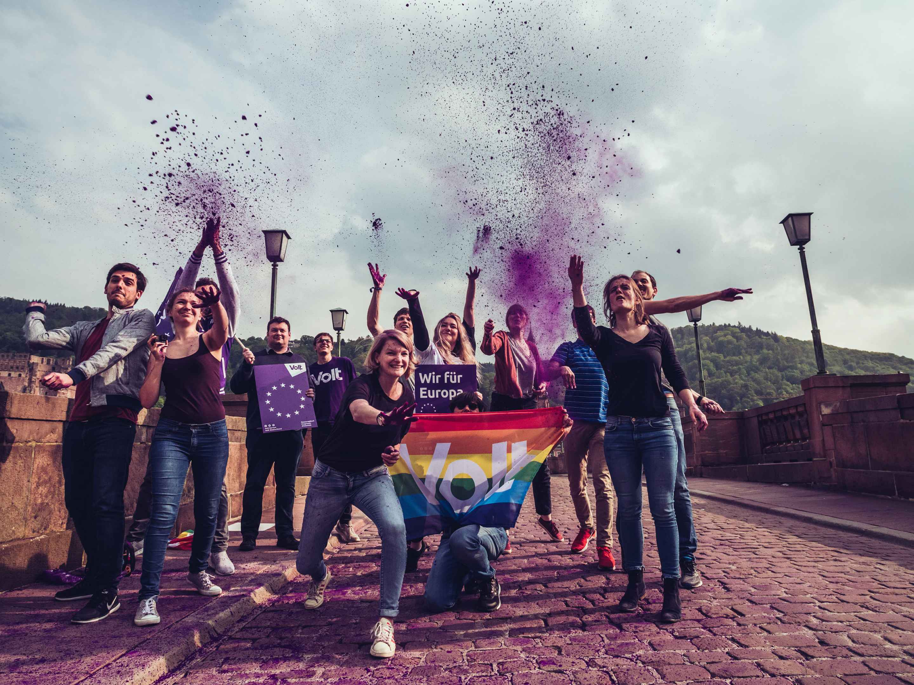

Pourquoi voter pour Volt Allemagne depuis la France ?
Volt, le premier parti paneuropéen.
Nous presentons Volt
Volt
Qui sommes-nous ?
Nous sommes Volt. Un mouvement et un parti paneuropéen. Volt a été fondé en 2017 - en réaction et en tant que contre-mouvement actif à la hausse du nationalisme et du populisme à travers de l'Europe. Nous existons parce que nous sommes convaincus que les grands défis du 21ème siècle ne peuvent être résolus que si nous agissons ensemble au-delà des frontières. Dans une Europe où tous les hommes ont les mêmes opportunités de développer leur plein potentiel. Une Europe qui s'efforce d'atteindre les normes les plus élevées en matière de développement humain, social, environnemental et technologique.
Quelle est notre vision ?
La vision à long terme de Volt est de créer une Europe fédérale et unie avec un gouvernement européen commun, un premier ministre élu par le Parlement et un président. La base de ce projet est une Constitution européenne légitimée conjointement par les citoyens européens. Nous travaillons à cette vision avec un programme européen à tous les niveaux et dans tous les pays d'Europe. Pour nous, la création d'une république européenne fédérale n'est pas une fin en soi, mais un moyen de résoudre ensemble les grands défis de notre temps par-delà les frontières nationales.
Quel type de parti est Volt ?
Volt est un parti européen ! Avant tout, nous nous engageons pour l'unification européenne et la coopération transfrontalière à tous les niveaux ! Nous voulons réformer l'Union européenne afin qu'elle puisse agir au-delà des frontières. Nous nous opposons fermement à toute forme de populisme et de nationalisme.
Nous nous considérons comme pragmatiques et progressistes. Cela signifie que nous ne suivons pas strictement une idéologie, mais que nous recherchons toujours les meilleures solutions. Nous combinons les éléments sociaux, libéraux et écologiques. Nous sommes convaincus que les efforts nationaux unilatéraux et une politique d'isolement sont la fausse bonne approche pour relever les défis du 21e siècle.
Les élections fédérales
Pourquoi Volt ?
L'heure est à la Génération d'Europe. Face à des défis politiques majeurs et la fin de la régence Merkel, les élections fédérales de 2021 sont une énorme opportunité pour nous tous d'initier et de cocréer un changement. Le temps est venu pour une nouvelle génération en politique. Une génération qui ne se définit pas par l'âge, mais par des valeurs communes et la vision d'une Europe meilleure : La #GénérationEurope !
- La Génération Europe pense et agit à travers des frontières. Les partis nationaux atteignent leurs limites et pourtant les gouvernements nationaux, au sein du Conseil de l'UE, décident de l'orientation future de l'UE. Par conséquent, l'Europe se trouve dans un processus continu de négociation des intérêts nationaux. La mondialisation rapproche de plus en plus le monde. Il faut des politiques qui résolvent les problèmes au-delà des frontières.
- Pour la Génération d'Europe, l'Europe est la garantie de la paix et de notre avenir - hier, aujourd'hui et demain. Nous ne nous fermons pas au changement, mais nous le recherchons activement et courageusement. Nous saisissons les opportunités et voulons résoudre les problèmes de manière pragmatique.
- La Génération d'Europe est unie par la diversité et des valeurs communes. Nous faisons passer la coopération avant l'isolation, peu importe d'où vient la personne, quel que soit son âge. En Europe et au-delà. C'est ça, la Génération Europe !
Que signifie 'nouvelle politique' ?
- Paneuropéenne Volt pense et agit à l'échelle européenne et définit des politiques par-delà les frontières. Notre réseau et notre vision européen sont au cœur de notre mouvement. Nous adoptons avant tout une perspective européenne, car nous pensons que les défis de notre époque ne peuvent être résolus qu'à l'échelle européenne.
- Fondée sur des preuves Les positions politiques et le contenu de Volt sont scientifiquement fondés. En plus des meilleures pratiques, nous intégrons les découvertes scientifiques actuelles. Nous argumentons de manière logique et cohérente. Nous expliquons nos positions politiques et notre contenu de manière compréhensible. Nous exposons clairement les hypothèses sur lesquelles reposent nos affirmations et les illustrons par des exemples.
- Partificpative Volt veut permettre une participation active et accessible à toutes les personnes qui partagent nos valeurs. Cela signifie que les volontaires et les membres peuvent prendre des responsabilités dans des projets concrets dès le départ. Nous comptons sur vous, quel que soit votre âge, votre origine ou votre ancienneté.
- Politique de mouvement Nous pensons comme un parti et nous agissons comme un mouvement. Nous ne pensons pas seulement d'une élection à l'autre. Le véritable changement politique se produit sur le long terme et sur le terrain.
Que signifie la 'Nouvelle Europe' ?
- Une république européenne : unie // fédérale // réformée
Notre objectif est une Europe et une démocratie : une République européenne unie et démocratiquement contrôlée par ses citoyens. Pour nous, la création d'une République européenne fédérale n'est pas une fin en soi, mais un moyen de résoudre ensemble les grands défis de notre époque par-delà les frontières nationales. - Le digitalisation autodéterminée : indépendante // sécurisée // ouverte
Vos données sont les votres. Nous exigeons une stratégie numérique européenne autodéterminée qui se concentre sur les avantages pour les citoyens. La transformation numérique doit être poussée dans tous les domaines de notre société afin qu'elle ait un impact durable sur nous et que nous ne soyons pas laissés pour compte. Pour cela, il faut investir, investir dans une économie d'avenir ! - Une économie respectueuse du climat : climatiquement neutre // entrepreneuriale // sociale
Nous adoptons une approche paneuropéenne en matière de climat, car le changement climatique ne s'arrête pas aux frontières. Notre objectif : la neutralité climatique, non seulement à l'échelle nationale, mais aussi dans toute l'Europe d'ici 2040. Nous voulons soutenir les entrepreneurs et les entreprises de toute l'Europe qui s'engagent en faveur d'une économie de marché respectueuse du climat et en faire la référence pour leur développement entrepreneurial et leur innovation technologique. Pour que l'économie entre dans les chiffres verts ! - L'éducation du nouveau départ : individuelle // tout au long de la vie // innovante
Nous ne voulons rien d'autre qu'un redémarrage complet de notre système éducatif afin de doter les élèves des compétences essentielles pour le siècle numérique. Cela nécessite une plus grande coopération de la politique éducative au niveau fédéral d'une part, et une plus grande autonomie des écoles d'autre part. Toutefois, notre attention se porte toujours sur l'enfant et l'apprentissage lui-même, quel que soit son âge. L'éducation doit être aussi individuelle que nos enfants ! - UNE société : intégrative // solidare // active
Nous voulons façonner UNE société qui soit résiliente, cohésive et solidaire. Pour l'instant, notre système de santé doit se concentrer sur la prévention des maladies et non sur les maladies seules. C'est la seule façon d'obtenir la santé sans virus dans le système lui-même ! Nous devenons résilients en tant que société lorsque nous sommes solidaires. Pour nous, la solidarité signifie que vous êtes couvert, quel que soit le chemin que vous voulez prendre dans votre vie. Pour nous, la solidarité signifie également que nous défendons activement ceux qui viennent, que nous les intégrons et leur donnons ce que toute personne mérite : un nouveau domicile sur des chemins sans danger. Nous avons tous une voix dans cette société. Utilisons-la pour des choses positives, pour plus d'unité au lieu de nous opposer les uns aux autres ; contre les divisions, la haine, l'injustice et la discrimination. Nous nous voyons comme une société avec des chances égales pour tous.
Avoir la parole au lieu d'être exclu
Pourquoi voter pour Volt Allemagne depuis la France ?
- Plus d'Europe
Volt est désormais présent dans tous les pays européens. Nous avons un programme européen commun qui est également au centre de nos programmes nationaux respectifs. Même si les citoyens de l'UE en dehors de l'Allemagne sont exclus des élections nationales comme ici en France, un vote pour Volt en Allemagne est aussi un vote pour Volt en France : un vote pour plus d'Europe et plus de coopération. - Plus d'integration
Qu'il s'agisse de l'accès au marché du travail ou de la liberté de mouvement, les Européens vivant à l'étranger vivent l'idée européenne. Cependant, nos systèmes démocratiques restent nationaux. Plus nous nous intégrons en Europe et sommes exclus des élections nationales dans notre pays de résidence, plus il devient important de voter aux élections dans notre pays d'origine et de donner un vote pour plus d'Europe et plus d'intégration. - Plus de représentation
Les partis européens et les listes transnationales ne sont pas légalement possibles jusqu'à présent. C'est pourquoi Volt Europe a créé des chapitres nationaux pour essayer de représenter les intérêts des citoyens européens. Un vote pour Volt Allemagne depuis l'étranger est donc aussi un vote pour Volt Europe et plus de représentation.